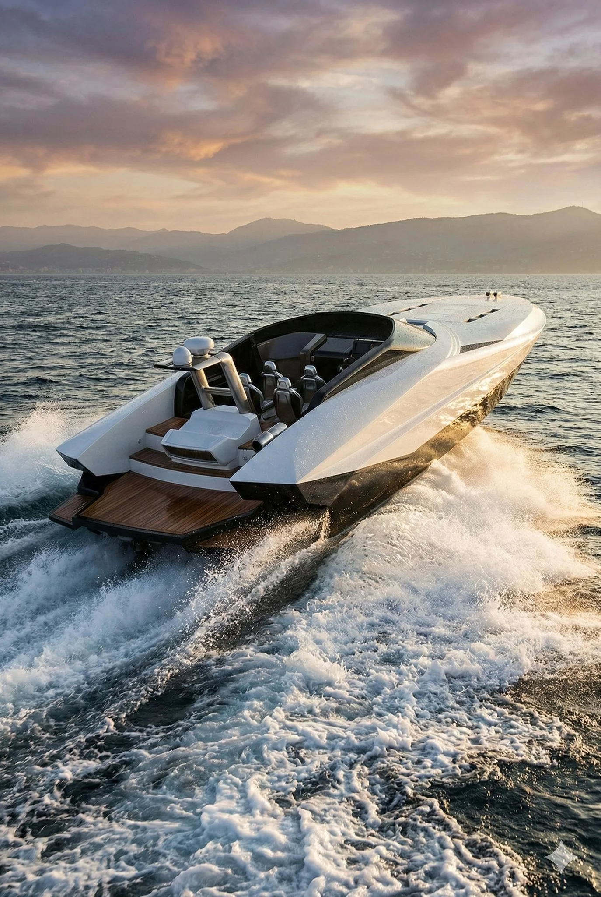
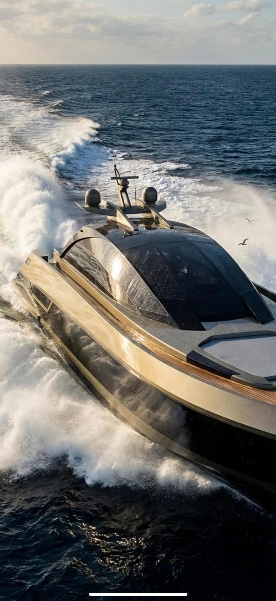

0105
VELLARIO / DESIGN STUDIES
The unexpected
Quantum 999
An unmistakable expression of freedom.
01 / THE COLLECTION

The art of living exceptionally, on water.
Born from an admiration for the timeless beauty of Como, VELLARIO imagines a new art of life on water.
NOT SIMPLY BOATS. OBJECTS OF DESIRE.Five distinctive design studies. Five interpretations of a singular ambition.
The unexpected
An unmistakable expression of freedom.
An independent study in proportion, light and movement. The cinematic language begins where the expected ends.
← BACK TO THE COLLECTIONORIGINAL DESIGN ARCHIVE · INDEPENDENT STUDY
A pure Italian line
The elegance of absolute restraint.
An original nautical design study in which volume, character and a sporting spirit remain perfectly balanced.
← BACK TO THE COLLECTIONORIGINAL DESIGN ARCHIVE · INDEPENDENT STUDYAn evolving expression
A singular study in the making.
The MAS 52 visual archive is being authenticated. We will not represent another design as this vessel.
← BACK TO THE COLLECTION
Life without boundaries
Space to experience the extraordinary.
The grand tender concept: open air, refined proportions and a generous relationship with the sea.
← BACK TO THE COLLECTIONORIGINAL DESIGN ARCHIVE · INDEPENDENT STUDY
A timeless signature
Classic proportions. A forward gaze.
An archival nautical design in which every line holds its own purpose. The original visual heritage is under curation.
← BACK TO THE COLLECTIONORIGINAL DESIGN ARCHIVE · INDEPENDENT STUDYMoments, movement and the art of being on water. A selection of moving imagery from the design archive.
Original films are stored in Dropbox; availability depends on the connected archive's access permissions. Maison motion footage is an editorial study, not a documentary film of a completed VELLARIO vessel.
A place of extraordinary light. Quiet confidence. A way of life where beauty is never an afterthought.
Proportions, precision, and a profound respect for the exceptional. VELLARIO begins with design — and a vision for contemporary Italian craftsmanship.
DESIGN STUDIES · PROPOSED MAISON
The shores of Lake Como have long shaped the language of Italian nautical elegance. Their tradition of fine boatbuilding and an enduring connection between design and landscape inspire the vision of VELLARIO.
Our story is at its beginning. The heritage we honour belongs to the lake.
Discover a new world of Italian nautical design. For private introductions and expressions of interest.
REQUEST A PRIVATE INTRODUCTION ↗This film is stored in the private Dropbox archive and is not available for direct playback here.
OPEN THE ORIGINAL ON DROPBOX ↗